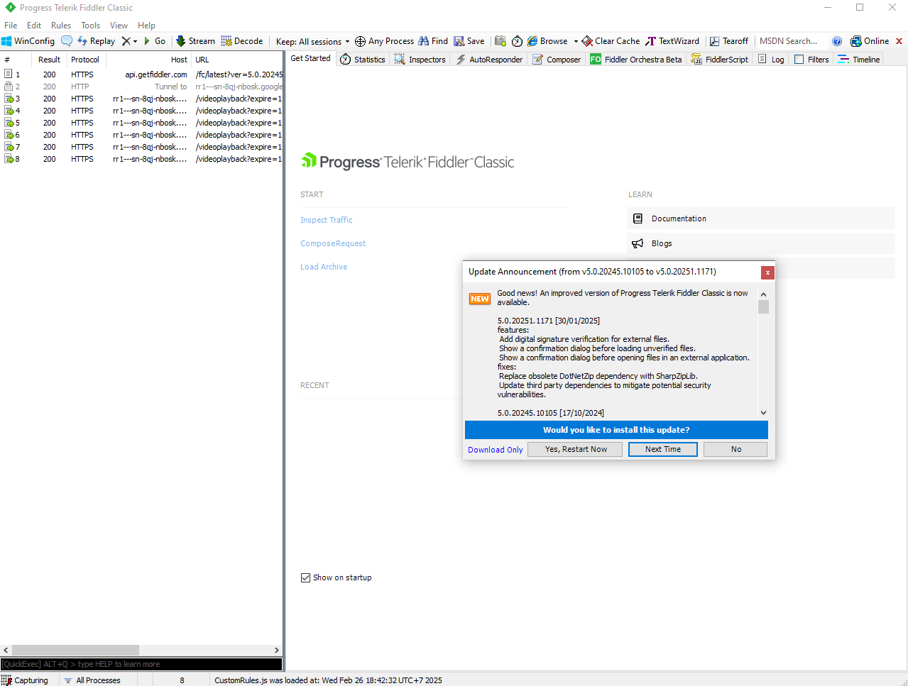
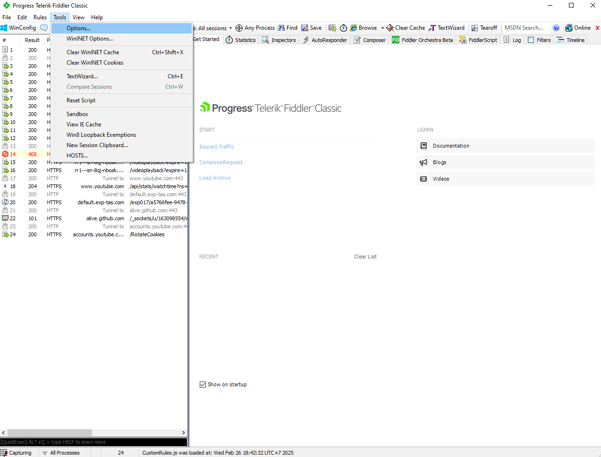
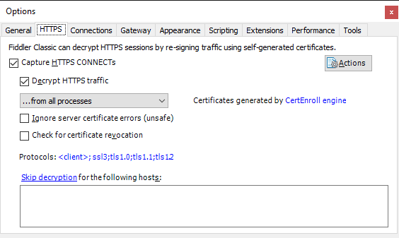
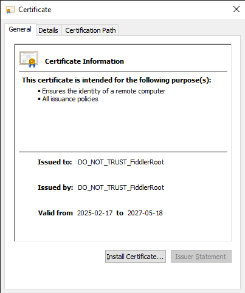
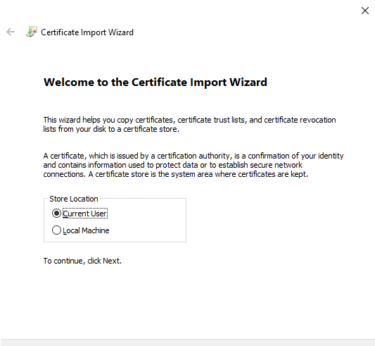
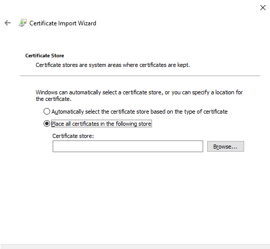
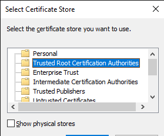
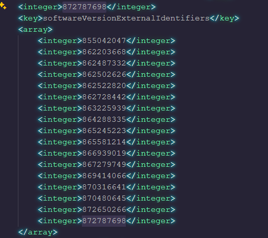
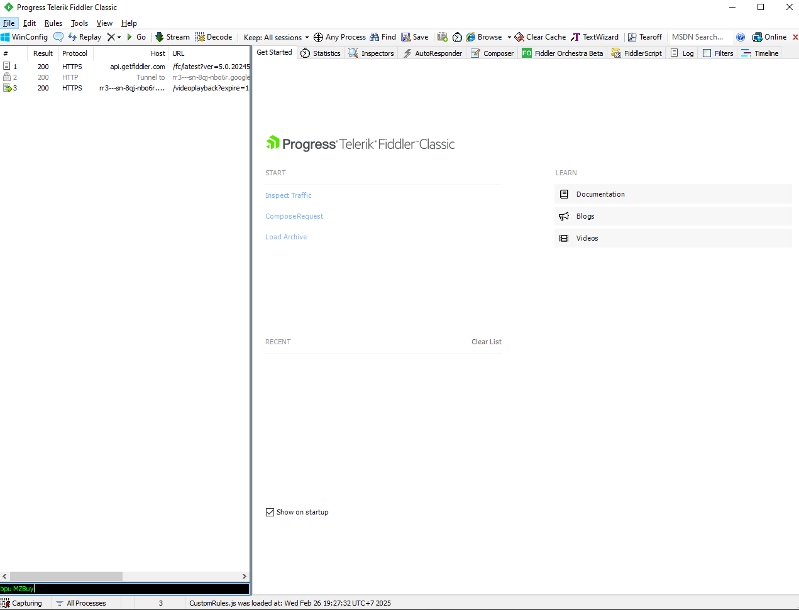
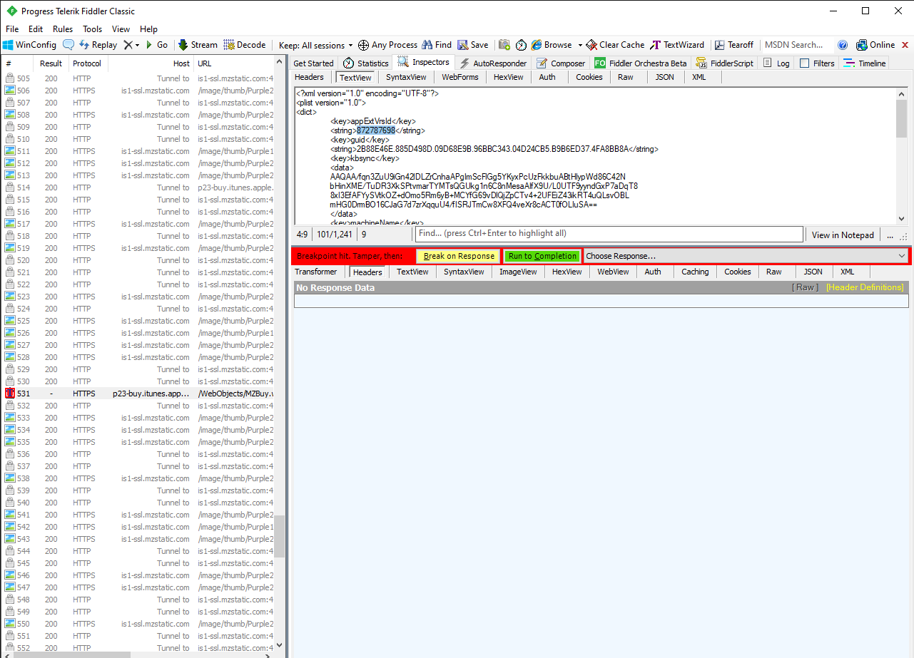

Điều kiện bắt buộc
- Đã từng tải ứng dụng
-
Ứng dụng có trên App Store hoặc vẫn còn trong mục "Đã mua" nếu đã bị gỡ
- Tìm được appVerId
- Sử dụng trên Windows
Phần mềm cần thiết
Cài đặt Fiddler Classic
-
Mở Fiddler Classic và Nhấn "No" nếu hỏi cập nhật

-
Chọn Tools > Options.. > chọn thẻ HTTPS

-
Decrypt HTTPS traffic > Chọn "No" nếu hộp thoại hiện lên và chọn Actions
> Export Root Certificate to Desktop

-
Nhấp vào FiddlerRoot.cer trên Desktop để cài đặt và chọn Install
Certificate...



-
Chọn Trusted Root Certification Authorities > Finish

Tìm appVerId
-
Mở iTunes > Đăng nhập > Đã mua >
Tải ứng dụng cần hạ cấp
- Đổi định dạng ứng dụng thành .zip và giải nén
- Mở tệp iTunesMetadata.plist bằng Notepad hoặc Visual Studio Code

- Tìm mảng chứa dãy số nguyên chính là appVerId của ứng dụng
Tải phiên bản cần hạ cấp
-
Nhập bpu MZBuy vào Fiddler Classic > Enter

-
Tải lại ứng dụng cần hạ cấp và chọn
p23-buy.itunes.app..

-
Chọn TextView > dán appVerId vào vị trí bôi đen > Run to Completion
-
iTunes sẽ tự tải phiên bản ứng dụng tương ứng với appVerId đã dán vào
Lưu ý
- Sao lưu lại tệp ipa của ứng dụng ở một nơi an toàn sau khi tải về